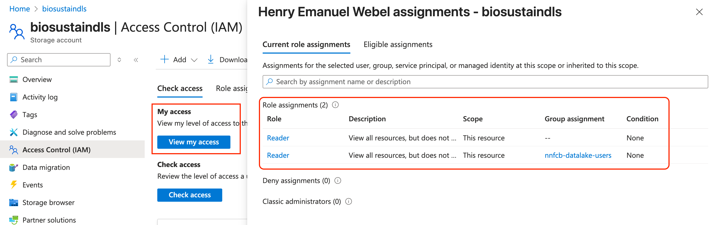
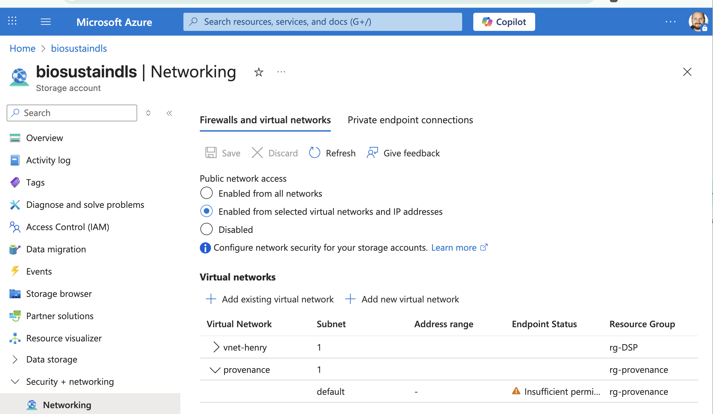
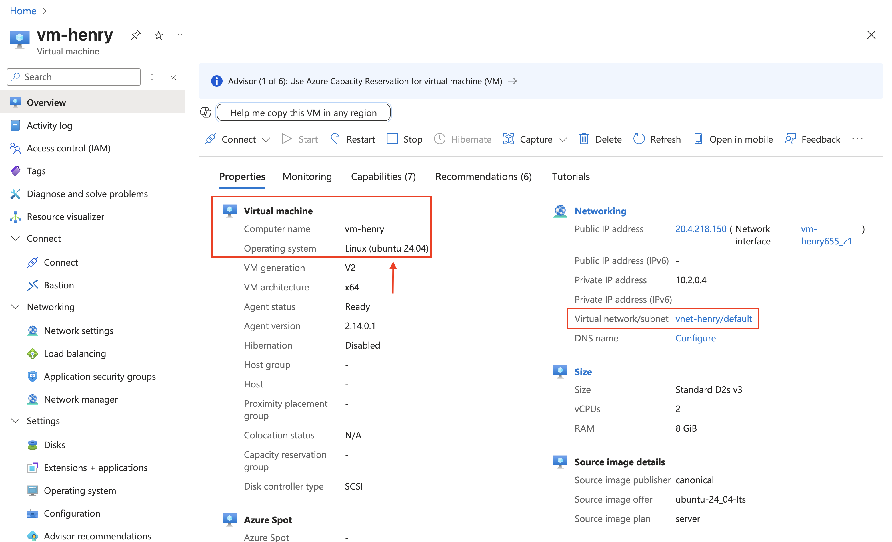

Copy data from the Data Lake¶
Scenario: A user wants to use her data on a virtual machine (VM) and needs to copy it
from the Data Lake storage account (biosustaindls) to the VM.
Pre-requisites¶
Roles in biosustaindls storage account¶
Each user is assigned a role Reader through the group called nnfcb-datalake-users
to allow them to see the biosustaindls storage account in the Azure portal.
However, on the container level the ACL entries restrict access to the project folders
the user is a contributor or owner of - effectively giving read permissions.
[!NOTE]
User cannot see their project folders in the containers with this role.

Networking access¶
Add vnet associated to your virtual machine to the biosustaindls storage account
Networking settings. This allows the VM to reach the storage account.

Which vnet your VM uses can be seen on the Overview page of the VM in the Azure portal, where you also see the VMs operating system, which is needed in the next
step to install azcopy:

Install azcopy¶
biosustaindls is the storage account for the Data Lake. Instruction to install azcopy
can be found in the
official documentation.
To find out your Linux distribution, you can run the following command:
# Get the release of your Linux distribution
lsb_release -a
An example ouput is the following where you would use ubuntu and 24.04 as of the
current instructions (up for change):
No LSB modules are available.
Distributor ID: Ubuntu
Description: Ubuntu 24.04.1 LTS
Release: 24.04
Codename: noble
login to azcopy¶
azcopy login
copy data¶
Copy a project folder on the Data Lake (biosustaindls) to a local folder called data.
Here the <container> is raw and the <project-id> is P29_327448795...f (abbreviated),
which is the folder name in the main directory of that container. All data from that project
would be copied to the data folder.
azcopy copy 'https://biosustaindls.dfs.core.windows.net/<container>/<project-id>' 'data' --recursive
azcopy copy 'https://biosustaindls.blob.core.windows.net/<container>/<project-id>' 'data' --recursive